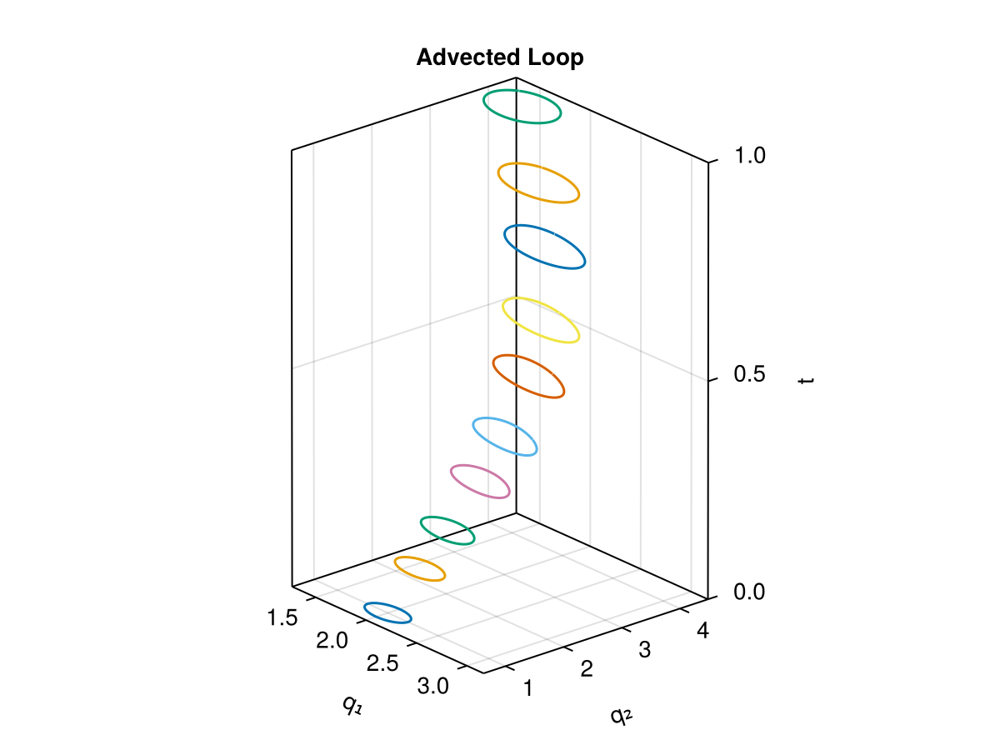
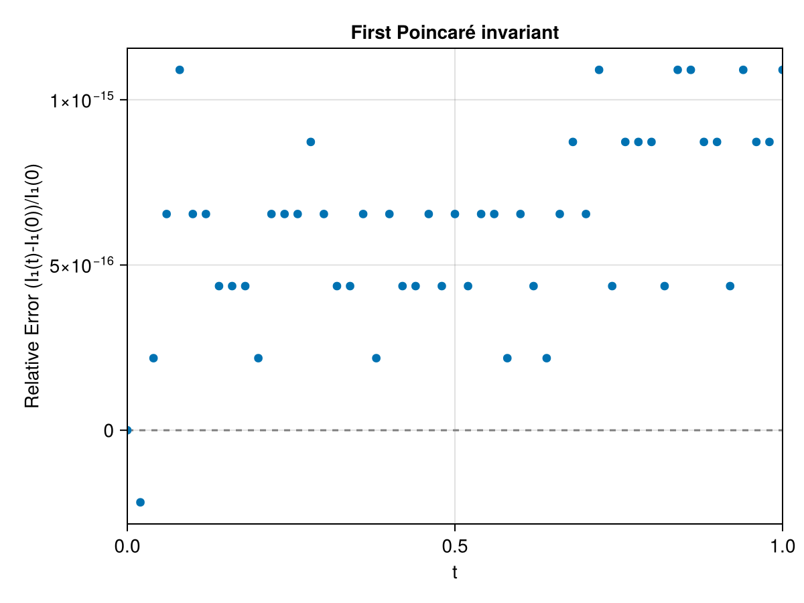
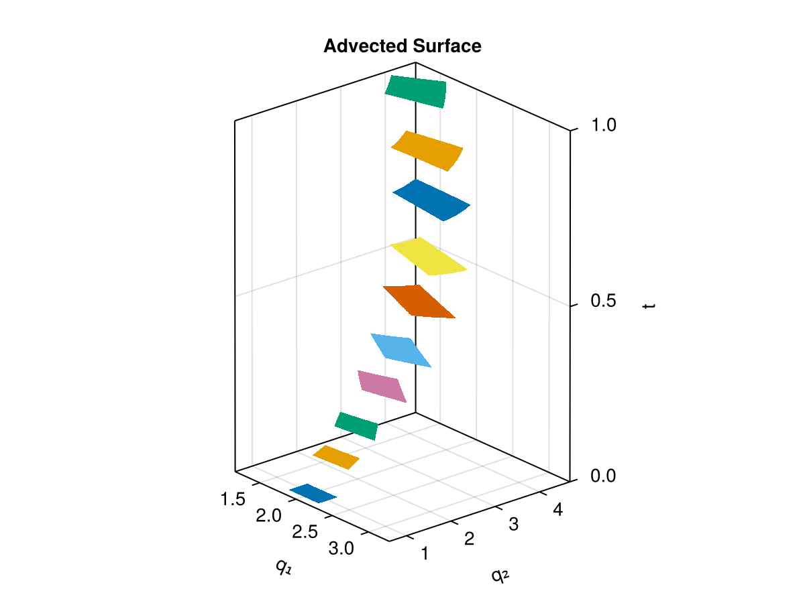
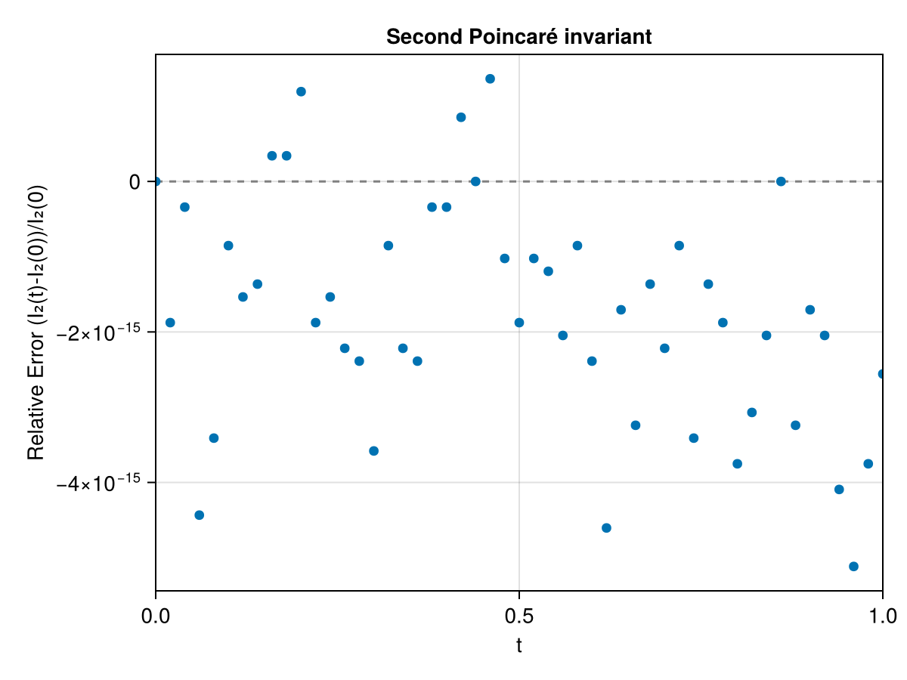

Lotka-Volterra
The two-dimensional Lotka-Volterra system is a noncanonical Hamiltonian (Poisson) system on the positive quadrant $q = (q_1, q_2)$, $q_i > 0$, with Hamiltonian
\[H(q) = a_1 \, q_1 + a_2 \, q_2 + b_1 \log q_1 + b_2 \log q_2 .\]
We use the LotkaVolterra2dSingular variant from GeometricProblems.jl, whose "singular" degenerate Lagrangian carries the one-form
\[\vartheta(q) = \begin{pmatrix} \dfrac{\log q_2}{q_1} \\[1ex] 0 \end{pmatrix} .\]
This is exactly the form of the symplectic potential that the DVRK (Degenerate Variational Runge-Kutta) integrator expects, so integrating the degenerate LODEProblem with DVRK preserves the noncanonical symplectic structure $\omega = d\vartheta$ — and with it the Poincaré invariants — to machine accuracy. The plotting functions plot_loop, plot_surface and plot_invariant come from the package's Makie extension, activated by loading CairoMakie.
using PoincareInvariants
using GeometricIntegrators
using GeometricProblems.LotkaVolterra2dSingular
using StaticArrays
using CairoMakie
prob = lodeproblem([2.0, 1.0]; timespan = (0.0, 1.0), timestep = 0.02)
par = parameters(prob)The invariant forms
The noncanonical symplectic one-form $\vartheta$ and two-form $\omega = d\vartheta$ belong to the LODEProblem itself. PoincareInvariants expects a differential form as an in-place function form(out, t, z, p) — writing its value at the phase space point z into the preallocated out — and this is exactly the convention GeometricProblems uses for its one- and two-forms (ϑ(Θ, t, q, params), ω(Ω, t, q, params)). We can therefore take them straight from the problem's function tuple with functions(prob) and pass fs.ϑ / fs.ω directly to FirstPI / SecondPI below, with no wrapper:
fs = functions(prob)First invariant
\[I_{1} = \oint_{\gamma} \vartheta_i(q) \, dq^i\]
We advect a circle of radius $\rho = 0.2$ around the initial point $(2, 1)$.
q₀ = SVector(2.0, 1.0)
ρ = 0.2
pi1 = FirstPI{Float64, 2}(fs.ϑ, 500)
sol1 = integrate(PIEnsembleProblem(prob, pi1, ϕ -> q₀ .+ ρ .* (cospi(2ϕ), sinpi(2ϕ))), DVRK(Gauss(2)))The loop is transported and deformed by the Lotka-Volterra flow:
plot_loop(sol1; xlabel = "q₁", ylabel = "q₂")
plot_invariant(pi1, sol1; p = par, title = "First Poincaré invariant")
Second invariant
\[I_{2} = \int_{S} \omega_{ij}(q) \, dq^i \, dq^j\]
We advect a square around $(2, 1)$, staying within the positive quadrant.
pi2 = SecondPI{Float64, 2}(fs.ω, 2_000)
sol2 = integrate(PIEnsembleProblem(prob, pi2, (x, y) -> q₀ .+ ρ .* (2x - 1, 2y - 1)), DVRK(Gauss(2)))grid = SecondPI{Float64, 2}(fs.ω, (15, 15), SecondFinDiffPlan)
solg = integrate(PIEnsembleProblem(prob, grid, (x, y) -> q₀ .+ ρ .* (2x - 1, 2y - 1)), DVRK(Gauss(2)))
plot_surface(grid, solg; xlabel = "q₁", ylabel = "q₂")
plot_invariant(pi2, sol2; p = par, title = "Second Poincaré invariant")
The relative errors stay at the level of machine precision: with the correct form of the symplectic potential, the DVRK variational integrator preserves the noncanonical Poincaré invariants to machine accuracy, even though the Lotka-Volterra flow deforms the initial curve and surface.